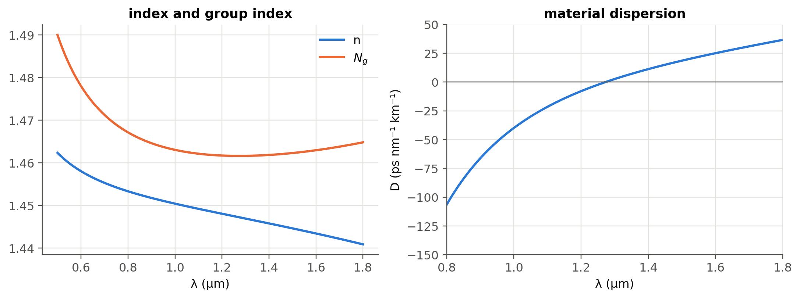
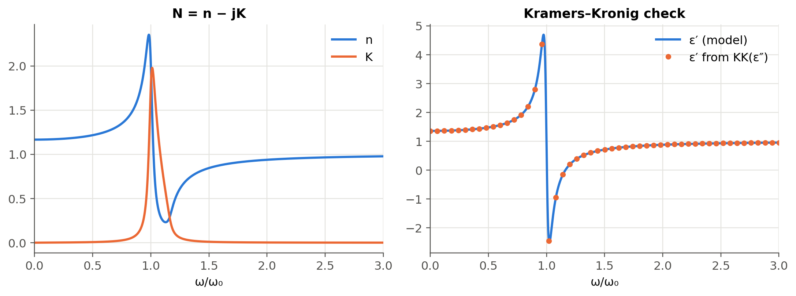
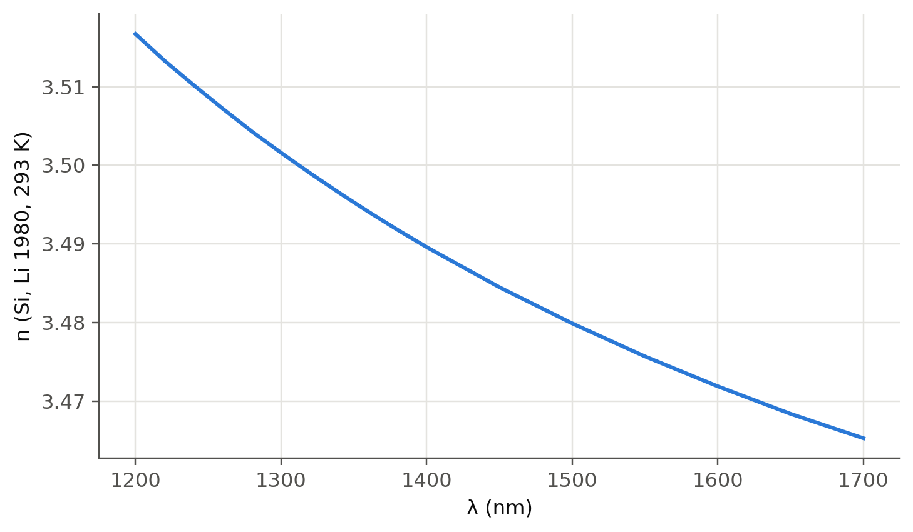

4 Refractive index, dispersion and absorption
 Run this chapter’s code in Google Colab (no installation).
Run this chapter’s code in Google Colab (no installation).
Slides 35–59 (polarisation of the medium, \(n=\sqrt{\varepsilon_r}\), anisotropy, Sellmeier and Cauchy relations, Lorentz and Drude oscillator models, complex dielectric function, Kramers–Kronig) and slides 155–161 (complex refractive index, absorption, CdTe example).
4.1 Key relations
The oscillating field polarises the molecules of the medium. The stronger this interaction, the slower the wave (slide 35). For a nonmagnetic medium (slides 37–39):
\[ v=\frac{1}{\sqrt{\varepsilon_0\varepsilon_r\mu_0}}=\frac{c}{n},\qquad n=\sqrt{\varepsilon_r},\qquad \lambda_\text{medium}=\frac{\lambda}{n},\qquad k_\text{medium}=nk . \]
\(\varepsilon_r\) must be taken at the optical frequency. Water has \(\varepsilon_r(\text{LF})\approx80\) but \(n=1.33\), because its slow orientational polarisation cannot follow an optical field (slide 41).
| model | formula | slide |
|---|---|---|
| Sellmeier | \(n^2=1+\sum_i\dfrac{A_i\lambda^2}{\lambda^2-\lambda_i^2}\) | 45 |
| Cauchy | \(n=n_{-2}(h\nu)^{-2}+n_0+n_2(h\nu)^2+n_4(h\nu)^4\) | 46 |
| Lorentz oscillator | \(\varepsilon_r(\omega)=1+\dfrac{\omega_p^2}{\omega_0^2-\omega^2+j\gamma\omega}\), \(\ \omega_p^2=\dfrac{Ne^2}{\varepsilon_0m}\) | 52–56 |
| Drude (free electrons) | Lorentz with \(\omega_0=0\) | 56 |
| complex index | \(N=n-jK=\sqrt{\varepsilon_r}\), \(\ n^2-K^2=\varepsilon_r'\), \(\ 2nK=\varepsilon_r''\) | 156–157 |
| absorption coefficient | \(\alpha=2k''=2k_0K=4\pi K/\lambda\), \(\ I\propto e^{-\alpha z}\) | 156 |
| reflectance (normal) | \(R=\dfrac{(n-1)^2+K^2}{(n+1)^2+K^2}\) | 157 |
4.2 The Lorentz oscillator, live (slides 52–57)
An electron bound to its atom behaves like a damped spring driven by the optical field. Below the resonance, \(n\) rises with frequency (normal dispersion). Near the resonance, light is absorbed (\(K\) peaks) and \(n\) falls with frequency (anomalous dispersion). Set \(\omega_0\to0\) to get the Drude model of a metal: then \(n<K\) below the plasma frequency, and the medium reflects.
4.3 Worked example: fused silica, the material of every telecom fiber (slides 45, 69)
The three-term Sellmeier equation with Malitson’s coefficients (1965) describes fused silica from about 0.21 to 3.7 µm. Its UV resonances (≈ 68 and 116 nm) come from electronic polarisation, the IR one (≈ 9.9 µm) from Si–O vibrations.
Show the Python
lam = np.linspace(0.5, 1.8, 2000)*1e-6
n = ol.n_silica(lam)
Ng = ol.group_index_silica(lam)
d2n = np.gradient(np.gradient(n, lam), lam)
D = -(lam/c0)*d2n*1e6 # s/m² -> ps/(nm km)
i = np.argmin(abs(lam - 1.55e-6))
print(f"at 1550 nm: n = {n[i]:.4f}, Ng = {Ng[i]:.4f}, D = {D[i]:.1f} ps/(nm km); "
f"zero material dispersion ≈ {lam[5:-5][np.argmin(abs(D[5:-5]))]*1e9:.0f} nm")
fig, ax = plt.subplots(1, 2, figsize=(10, 3.8))
ax[0].plot(lam*1e6, n, label="n"); ax[0].plot(lam*1e6, Ng, label="$N_g$")
ax[0].set(xlabel="λ (µm)", title="index and group index"); ax[0].legend()
ax[1].plot(lam[5:-5]*1e6, D[5:-5]); ax[1].axhline(0, c=ol.INK2, lw=0.8)
ax[1].set(xlabel="λ (µm)", ylabel="D (ps nm⁻¹ km⁻¹)", title="material dispersion", xlim=(0.8, 1.8), ylim=(-150, 50))
plt.tight_layout(); plt.show()at 1550 nm: n = 1.4440, Ng = 1.4626, D = 21.9 ps/(nm km); zero material dispersion ≈ 1273 nm
The bulk-silica \(D\approx22\) ps nm⁻¹ km⁻¹ at 1550 nm is close to the ≈ 17 ps nm⁻¹ km⁻¹ quoted for SMF-28. The difference is waveguide dispersion, the subject of Chapter 2.
4.4 Worked example: a numerical Kramers–Kronig check (slide 59)
\(\varepsilon_r'\) and \(\varepsilon_r''\) are not independent. Causality links them:
\[ \varepsilon_r'(\omega)-1=\frac{2}{\pi}\,\mathcal P\!\!\int_0^\infty\frac{\omega'\,\varepsilon_r''(\omega')}{\omega'^2-\omega^2}\,d\omega' . \]
Show the Python
w = np.linspace(1e-4, 6, 6001)
eps = ol.lorentz_eps(w, 1.0, 0.6, 0.05)
eps1, eps2 = eps.real, -eps.imag
n, K = ol.n_K(eps)
wm, kk = ol.kramers_kronig(w, eps2)
fig, ax = plt.subplots(1, 2, figsize=(10, 3.8))
ax[0].plot(w, n, label="n"); ax[0].plot(w, K, label="K")
ax[0].set(xlabel="ω/ω₀", title="N = n − jK", xlim=(0, 3)); ax[0].legend()
ax[1].plot(w, eps1, label="ε′ (model)"); ax[1].plot(wm[::60], kk[::60], "o", ms=4, label="ε′ from KK(ε″)")
ax[1].set(xlabel="ω/ω₀", title="Kramers–Kronig check", xlim=(0, 3)); ax[1].legend()
plt.tight_layout(); plt.show()
4.5 Worked example: CdTe and the Reststrahlen band (slides 158–161)
Calculate the absorption coefficient and reflectance of CdTe at the Reststrahlen peak (\(\lambda\approx70\) µm, \(K\approx6\), \(n\approx4\)) and at 50 µm (\(K\approx0.02\), \(n\approx2\)).
Show the Python
def alpha_R(n, K, lam):
return 4*np.pi*K/lam, ((n - 1)**2 + K**2)/((n + 1)**2 + K**2)
for lbl, n_, K_, lam_ in (("Reststrahlen peak, 70 µm", 4.0, 6.0, um(70)), ("50 µm", 2.0, 0.02, um(50))):
a, R = alpha_R(n_, K_, lam_)
print(f"{lbl:26s} α = {a:.3e} m⁻¹ (depth 1/α = {1e6/a:.3g} µm), R = {R:.3f}")Reststrahlen peak, 70 µm α = 1.077e+06 m⁻¹ (depth 1/α = 0.928 µm), R = 0.738
50 µm α = 5.027e+03 m⁻¹ (depth 1/α = 199 µm), R = 0.111The reflectance jumps from 11 % to about 74 % at the Reststrahlen peak. (The slide quotes 72 %; with \(n=4\), \(K=6\) the formula gives 45/61 = 0.738.) Between the TO and LO phonon frequencies \(\varepsilon_r'<0\), so the crystal behaves like a metal and reflects.
4.6 Worked example: why germanium detects 1550 nm light
Show the Python
data = {"Si @ 850 nm": (3.641, 3.612e-3, 850), "Si @ 1550 nm": (3.48, 1e-9, 1550),
"Ge @ 1310 nm": (4.278, 0.0861, 1310), "Ge @ 1550 nm": (4.25, 0.0252, 1550)}
for lbl, (n_, K_, l) in data.items():
a, R = alpha_R(n_, K_, nm(l))
depth = f"{1e6/a:8.2f} µm" if a > 1 else " transparent"
print(f"{lbl:13s} α = {a/100:9.3g} cm⁻¹, absorption depth = {depth}, R = {R:.2f}")Si @ 850 nm α = 534 cm⁻¹, absorption depth = 18.73 µm, R = 0.32
Si @ 1550 nm α = 8.11e-05 cm⁻¹, absorption depth = transparent, R = 0.31
Ge @ 1310 nm α = 8.26e+03 cm⁻¹, absorption depth = 1.21 µm, R = 0.39
Ge @ 1550 nm α = 2.04e+03 cm⁻¹, absorption depth = 4.89 µm, R = 0.38Silicon is transparent at 1310/1550 nm (it is the waveguide core of silicon photonics), whereas a few µm of germanium absorb most of the light. This is the physical basis of the Ge-on-Si photodetectors of Chapter 5. (These are bulk, unstrained Ge values; the tensile strain of Ge grown on Si increases absorption at 1550 nm.) The numbers also show why 850 nm Si detectors need thick absorbers (tens of µm) and trade speed against responsivity.
4.7 Real materials from the refractiveindex.info database (optional package)
Show the Python
try:
from refractiveindex import RefractiveIndexMaterial # pip install refractiveindex
Si = RefractiveIndexMaterial(shelf="main", book="Si", page="Li-293K")
lam_nm = np.linspace(1200, 1700, 200)
plt.plot(lam_nm, [Si.get_refractive_index(l) for l in lam_nm])
plt.xlabel("λ (nm)"); plt.ylabel("n (Si, Li 1980, 293 K)"); plt.show()
except Exception as err:
print("refractiveindex package or database not available here:", type(err).__name__)
TipGoing deeper
- Fit a two-term Cauchy law to the silica Sellmeier curve over 1.2–1.7 µm. Where does it break down, and why can Cauchy never reproduce anomalous dispersion?
- Relate the UV resonance of silica to its bandgap (~9 eV) and the IR one to Si–O vibrations. The IR resonance is also the origin of the long-wavelength loss edge of fibers (Chapter 14).
- Drude model (slide 56): set \(\omega_0=0\). Compute \(n\) and \(K\) for a metal and explain why metal mirrors saturate at ≈ 95–98 % reflectance (slides 190, 204).
- Kramers–Kronig in practice: ellipsometry and absorption measurements are routinely converted into \(n(\lambda)\) this way. What goes wrong numerically when the measured spectrum is truncated?
- Anisotropy (slide 44): uniaxial crystals such as LiNbO₃ have \(n_o\ne n_e\). This is the basis of Chapter 6 (polarisation and modulation).
- Beware of the factor 2: \(\alpha\) is the intensity attenuation coefficient, \(k''\) the field one. Convert \(\alpha\) to dB/cm.
- Free-carrier absorption and plasma dispersion (Soref–Bennett relations) in doped Si change both \(n\) and \(K\). This is the basis of silicon modulators (Chapter 6).
NoteComplements
- I. H. Malitson, “Interspecimen comparison of the refractive index of fused silica”, J. Opt. Soc. Am. 55, 1205 (1965).
- M. Fox, Optical Properties of Solids, Oxford: classical oscillator, Kramers–Kronig and free-electron models, with semiconductor examples.
- R. A. Soref, B. R. Bennett, “Electrooptical effects in silicon”, IEEE J. Quantum Electron. 23, 123 (1987).
- refractiveindex.info: curated database of optical constants, with citations for each dataset.
4.8 Try it yourself
- Use the live panel with \(\omega_0=0\) (Drude). Below which frequency is \(K>n\)? Relate this to the plasma frequency.
- Add a second resonance to
ol.lorentz_epsand reproduce the qualitative shape of the GaN curves of slide 58. - What thickness of Ge absorbs 90 % of the light at 1550 nm? At 1310 nm?